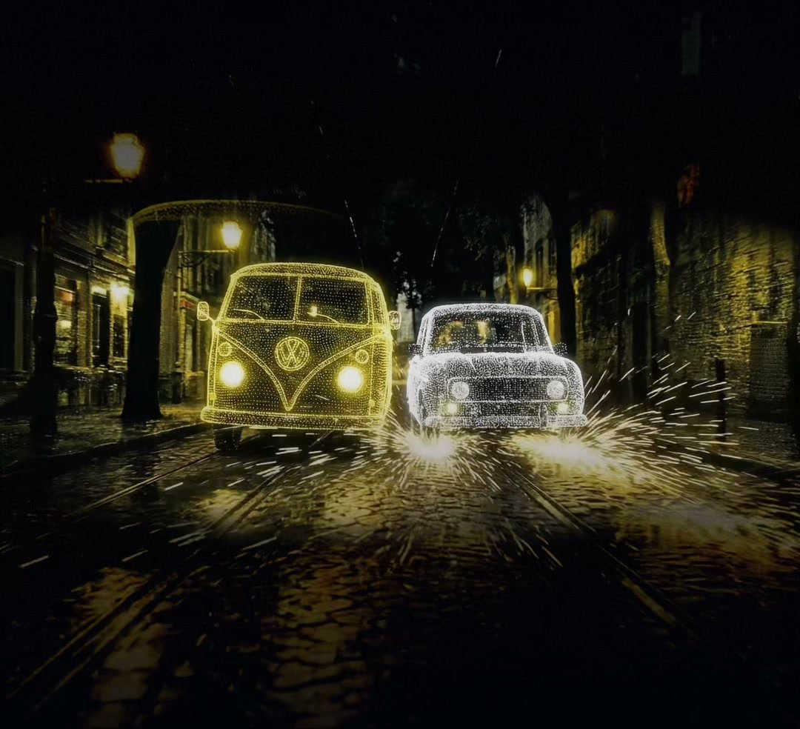
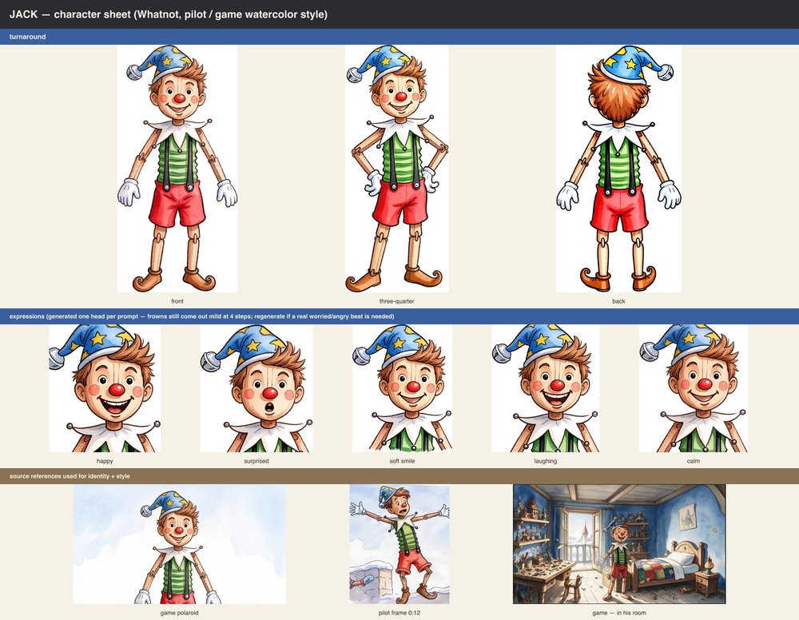
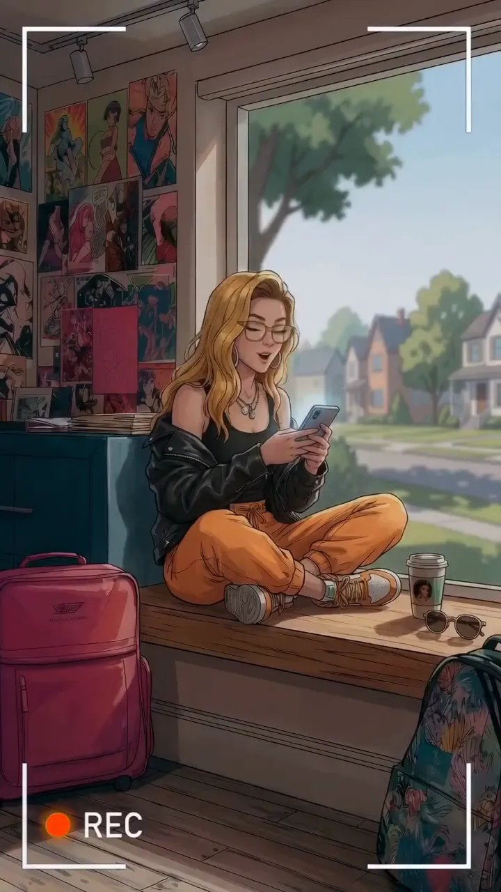
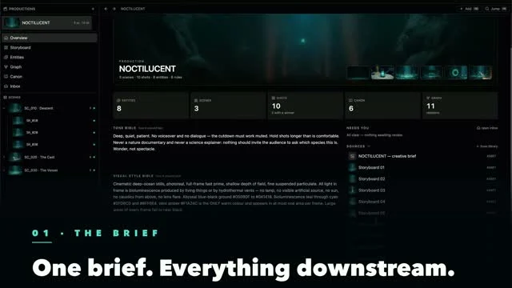

StandVirtual
A conference opening film, built for three screens.
Explore project ↗

Digital Content · Archival Animation · Magic Mirror · Virtual Outfitting
204 is a creative studio working from RnA Studio in Lisbon. Every world starts with human direction — then becomes a film, a campaign, or something you interact with.
Work with us ↗
Films, characters and creative collaborations.

Immersive worlds, live installations and participation.
Stories shaped with the people behind them. Archival voices, original characters and new worlds, carried through to the finished film.

Films, animated worlds and commissioned work. A short introduction to the studio’s productions, before you explore the collaborations below.
Short films animated over his own recorded voice.

Working Title Animation brings storytelling and creative technology together. We work with Mitchell Kriegman to explore how characters move from an idea into animated and interactive worlds. The Clarissa process reel pairs original scripts and visual references with production examples.


Three years ago, every man, woman and child in the Scottish town of Dunbrae woke up with the same face. A documentary crew arrives to meet Dimi, the man who claims the face was originally his, just as residents begin reporting strange new mutations. A surreal deadpan comedy about identity, minor celebrity, and the fragile idea of being original.
Live transformations, portraits to take home, and worlds that surround you. Choose how you want to become part of the experience.
A reflection that follows your movement. Become a character, step inside a painting, shape the room, or play inside a visual world.
Bring Magic Mirror to your space ↗Become another character, an artistic style or a campaign’s visual world.
Your movements bring a painting to life.
Touch and movement influence the surrounding visuals.
Steer and interact through your body, as in KBC’s Surf Studio.
With MuLabs, neurofeedback becomes evolving visual forms.
Custom visual styles, artist or brand references, and a frame or projection shaped around your space. Touch controls and the Mirror app let the experience be directed on site.
Plan a Magic Mirror installation ↗Pose, transform, take it home. Guests become part of your campaign’s world and leave with a branded print or a digital portrait.
Bring Magic Photo Booth to your event ↗
A simple capture, with no app needed for guests.
A visual style built for your event, brand or characters.
A branded print, a QR code and a digital keepsake.
Campaign-specific prompts, branded booth and interface design, an on-site operator, and print or digital delivery. Available as a standalone booth or alongside Magic Mirror.
Plan a Magic Photo Booth activation ↗Immersive projections, live performance and worlds you can look around.

Drum imagery surrounds the dancers. Android Jones visuals fill the dome. Two recordings from Texas Eclipse bring you into the space, from live performance to projection testing.
Dome projection presented in partnership with Chroma.
Explore Texas Eclipse ↗Footage filmed from inside a drum, projected around the dome alongside the dancers. Move the frame between the projection overhead and the performance below.
 ↕ Drag to move the frame
↕ Drag to move the frame
Live event recording · 14 seconds · Sound on · Original portrait framing available with Full frame.
Explore worlds made with 204's own 360° pipeline. These sequences are development studies for Sanctuary.
 204 original · 360° previzFront · 000°
Click the dome to step inside
204 original · 360° previzFront · 000°
Click the dome to step inside

A gallery, immersive room and creative lab at RnA Studio. Explore the space and its interactive installations.
Explore Sentient Space ↗Software that connects the story, the image and the room.
A story, a sketch or an archive sets the direction. Shared references connect characters, locations and shots. Artists review the possibilities, refine the work and choose what reaches the screen.

Prompin Studio captures from the Mr. Pipeline presentation. The workflow is artist-led; the screens show individual production tools.
Creative direction, production and interaction, shaped around your project.
Human direction at every step.
We learn your goals, tone, and audience.
Human vision leads; AI assists wherever it helps.
We shoot, generate, or construct — on screen or in the room.
Shipped, installed, and refined as your story keeps evolving.
Clients, artists and collaborators